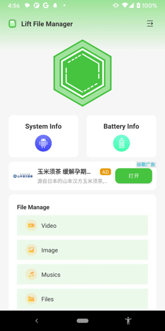
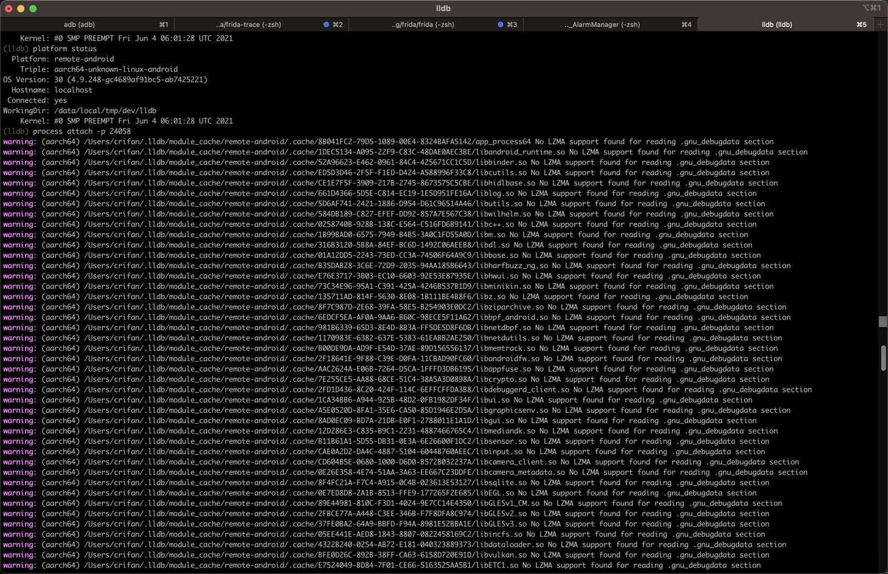
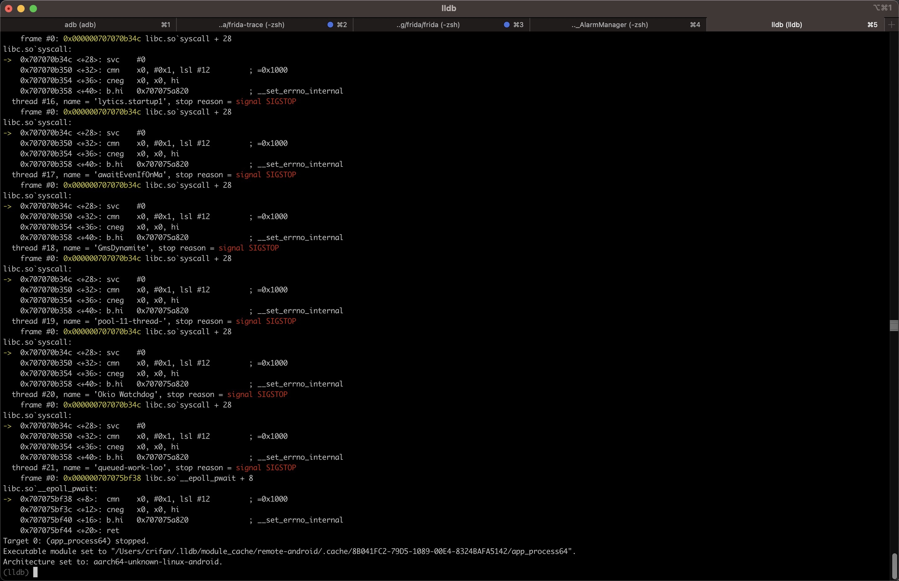
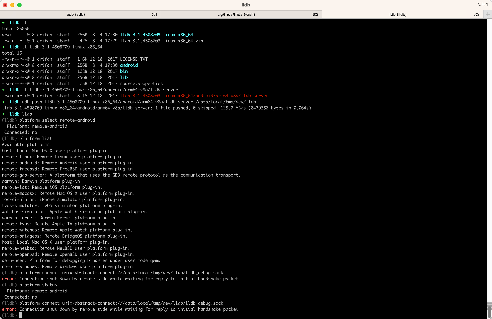
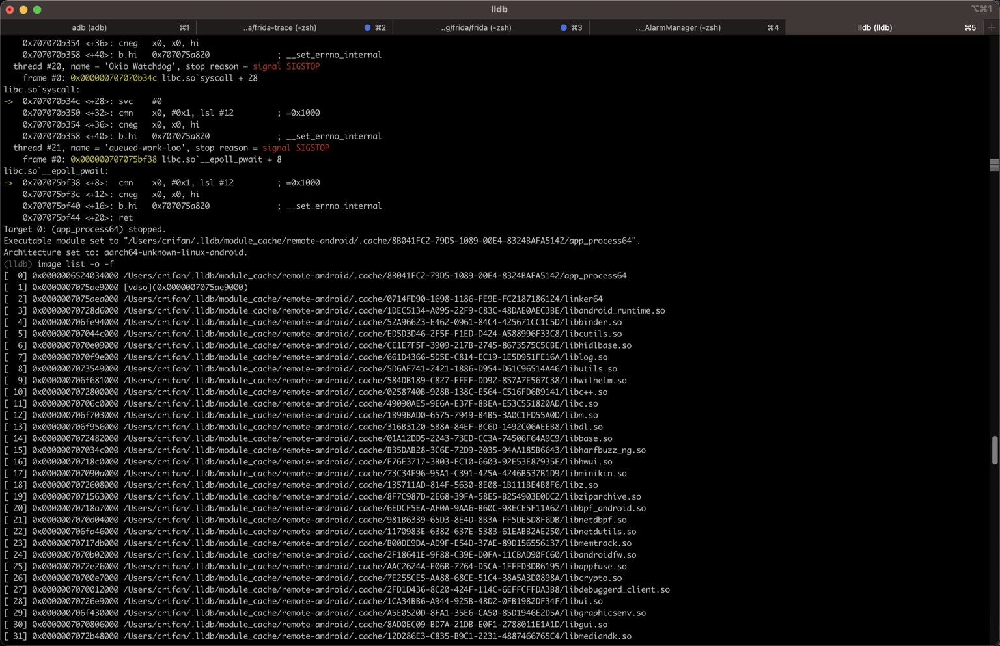
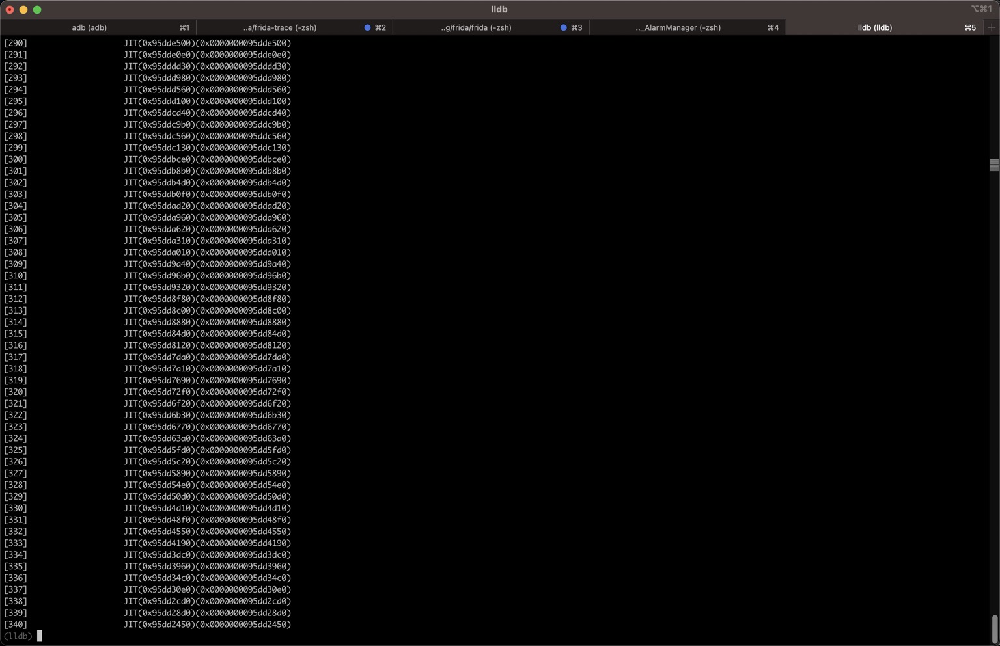

Mac中：用lldb调试安卓app进程
- 背景
- 被测安卓的app
- app名称：
Lift File Manager - 包名：
com.lift.filemanager.android - 主页面
- 
- app名称：
- 被测安卓的app
然后可以用lldb去调试安卓app（进程）了：
process attach -p 24058
- 说明
attach：当前用挂载模式（而不是spawn模式）-p 24058-p==--pid：进程的PID24058：当前安卓app的（主）进程的PID
输出举例
- 命令行输出：
(lldb) process attach -p 24058
warning: (aarch64) /Users/crifan/.lldb/module_cache/remote-android/.cache/8B041FC2-79D5-1089-00E4-8324BAFA5142/app_process64 No LZMA support found for reading .gnu_debugdata section
warning: (aarch64) /Users/crifan/.lldb/module_cache/remote-android/.cache/1DEC5134-A095-22F9-C83C-48DAE0AEC3BE/libandroid_runtime.so No LZMA support found for reading .gnu_debugdata section
warning: (aarch64) /Users/crifan/.lldb/module_cache/remote-android/.cache/52A96623-E462-0961-84C4-425671CC1C5D/libbinder.so No LZMA support found for reading .gnu_debugdata section
warning: (aarch64) /Users/crifan/.lldb/module_cache/remote-android/.cache/ED5D3D46-2F5F-F1ED-D424-A588996F33C8/libcutils.so No LZMA support found for reading .gnu_debugdata section
...
...
...
warning: (aarch64) /Users/crifan/.lldb/module_cache/remote-android/.cache/68482D47-6551-C4A4-AE65-B2B4FC4E6ABA/libGLESv2_adreno.so No LZMA support found for reading .gnu_debugdata section
warning: (aarch64) /Users/crifan/.lldb/module_cache/remote-android/.cache/7A027C1B-6689-FB13-BC4C-DDF60D309D9F/libllvm-glnext.so No LZMA support found for reading .gnu_debugdata section
warning: (aarch64) /Users/crifan/.lldb/module_cache/remote-android/.cache/28A702E7-CF8C-5CCC-2481-D2DD8B341E1B/libcompiler_rt.so No LZMA support found for reading .gnu_debugdata section
warning: (aarch64) /Users/crifan/.lldb/module_cache/remote-android/.cache/11A028BE-C11F-BD95-B235-8593B25A1887/libwebviewchromium_loader.so No LZMA support found for reading .gnu_debugdata section
Process 24058 stopped
* thread #1, name = 'er.android:sist', stop reason = signal SIGSTOP
frame #0: 0x000000707075bf38 libc.so`__epoll_pwait + 8
libc.so`__epoll_pwait:
-> 0x707075bf38 <+8>: cmn x0, #0x1, lsl #12 ; =0x1000
0x707075bf3c <+12>: cneg x0, x0, hi
0x707075bf40 <+16>: b.hi 0x707075a820 ; __set_errno_internal
0x707075bf44 <+20>: ret
thread #2, name = 'Signal Catcher', stop reason = signal SIGSTOP
frame #0: 0x000000707075b978 libc.so`__rt_sigtimedwait + 8
libc.so`__rt_sigtimedwait:
-> 0x707075b978 <+8>: cmn x0, #0x1, lsl #12 ; =0x1000
0x707075b97c <+12>: cneg x0, x0, hi
0x707075b980 <+16>: b.hi 0x707075a820 ; __set_errno_internal
0x707075b984 <+20>: ret
thread #3, name = 'perfetto_hprof_', stop reason = signal SIGSTOP
frame #0: 0x000000707075acf4 libc.so`read + 4
libc.so`read:
-> 0x707075acf4 <+4>: svc #0
0x707075acf8 <+8>: cmn x0, #0x1, lsl #12 ; =0x1000
0x707075acfc <+12>: cneg x0, x0, hi
0x707075ad00 <+16>: b.hi 0x707075a820 ; __set_errno_internal
...
...
...
thread #21, name = 'queued-work-loo', stop reason = signal SIGSTOP
frame #0: 0x000000707075bf38 libc.so`__epoll_pwait + 8
libc.so`__epoll_pwait:
-> 0x707075bf38 <+8>: cmn x0, #0x1, lsl #12 ; =0x1000
0x707075bf3c <+12>: cneg x0, x0, hi
0x707075bf40 <+16>: b.hi 0x707075a820 ; __set_errno_internal
0x707075bf44 <+20>: ret
Target 0: (app_process64) stopped.
Executable module set to "/Users/crifan/.lldb/module_cache/remote-android/.cache/8B041FC2-79D5-1089-00E4-8324BAFA5142/app_process64".
Architecture set to: aarch64-unknown-linux-android.
(lldb)
- 截图
- 
- 
常见问题
error Connection shut down by remote side while waiting for reply to initial handshake packet
- 现象：lldb去连接安卓中lldb-server时报错：
(lldb) platform connect unix-abstract-connect:///data/local/tmp/dev/lldb/lldb_debug.sock error: Connection shut down by remote side while waiting for reply to initial handshake packet- 
- 原因：此处Android 13已开启了SELinux，导致无法连接
- 解决办法：去关于SELinux
- 有2种方式
- 永久关闭：需要修改Android源码，重新编译ROM或boot.img
- 此处暂时没条件，暂时放弃此路
- 临时关闭：通过参数设置关闭
- 具体命令
adb shell setenforce 0- 或：
- 先
adb shell进入shell，再su切换成root用户，再用setenforce 0去关闭SELinux
- 先
- （之前和之后都可以）用
getenforce去确认=查看当前SELinux状态Enforcing：SELinux已开启1redfin:/data/local/tmp/dev/lldb # getenforce EnforcingPermissive：SELinux已关闭redfin:/data/local/tmp/dev/lldb # getenforce Permissive
- 或：
- 具体命令
- 永久关闭：需要修改Android源码，重新编译ROM或boot.img
- 有2种方式
心得
如何查看安卓app的进程的PID
有多种方式查看到，（当前正在运行的）安卓app的进程的PID：
- Mac中
frida-ps -Uai- 其中可以看到自己已安装的安卓的app的详情：进程PID、app名称、包名
- 举例
➜ LiftFileManager_jadx_AlarmManager frida-ps -Uai | grep lift 24058 Lift File Manager com.lift.filemanager.android- 可以看到要测试的app的：
- 进程PID：
24058 - app名称：
Lift File Manager - 包名：
com.lift.filemanager.android
- 进程PID：
- 可以看到要测试的app的：
- 举例
- 其中可以看到自己已安装的安卓的app的详情：进程PID、app名称、包名
- （安卓手机的）adb的shell中
ps -A | grep yourAndroidAppName- 举例
redfin:/ # ps -A | grep lift u0_a243 24058 1008 33543564 207388 do_epoll_wait 0 S com.lift.filemanager.android u0_a243 xxxx 1008 14793148 119908 do_epoll_wait 0 S com.lift.filemanager.android:sist u0_a243 xxxx 1008 14754236 139864 do_epoll_wait 0 S com.lift.filemanager.android:dae u0_a243 xxxx 1008 14734752 109496 do_epoll_wait 0 S com.lift.filemanager.android:lift- LiftFileManager的主进程PID是：
24058
- LiftFileManager的主进程PID是：
- 举例
如何用lldb调试程序
之后就是，如何用lldb调试的具体效果了。
举例：
去看看加载的image：
(lldb) image list -o -f
(lldb) image list -o -f
[ 0] 0x0000006524034000 /Users/crifan/.lldb/module_cache/remote-android/.cache/8B041FC2-79D5-1089-00E4-8324BAFA5142/app_process64
[ 1] 0x0000007075ae9000 [vdso](0x0000007075ae9000)
[ 2] 0x0000007075aea000 /Users/crifan/.lldb/module_cache/remote-android/.cache/0714FD90-1698-1186-FE9E-FC2187186124/linker64
[ 3] 0x00000070728d6000 /Users/crifan/.lldb/module_cache/remote-android/.cache/1DEC5134-A095-22F9-C83C-48DAE0AEC3BE/libandroid_runtime.so
[ 4] 0x000000706fe94000 /Users/crifan/.lldb/module_cache/remote-android/.cache/52A96623-E462-0961-84C4-425671CC1C5D/libbinder.so
[ 5] 0x000000707044c000 /Users/crifan/.lldb/module_cache/remote-android/.cache/ED5D3D46-2F5F-F1ED-D424-A588996F33C8/libcutils.so
[ 6] 0x0000007070e09000 /Users/crifan/.lldb/module_cache/remote-android/.cache/CE1E7F5F-3909-217B-2745-8673575C5CBE/libhidlbase.so
[ 7] 0x0000007070f9e000 /Users/crifan/.lldb/module_cache/remote-android/.cache/661D4366-5D5E-C814-EC19-1E5D951FE16A/liblog.so
[ 8] 0x0000007073549000 /Users/crifan/.lldb/module_cache/remote-android/.cache/5D6AF741-2421-1886-D954-D61C96514A46/libutils.so
[ 9] 0x000000706f681000 /Users/crifan/.lldb/module_cache/remote-android/.cache/584DB189-C827-EFEF-DD92-857A7E567C38/libwilhelm.so
[ 10] 0x0000007072800000 /Users/crifan/.lldb/module_cache/remote-android/.cache/0258740B-928B-138C-E564-C516FD6B9141/libc++.so
[ 11] 0x00000070706c0000 /Users/crifan/.lldb/module_cache/remote-android/.cache/49090AE5-9E6A-E37F-8BEA-E53C551820AD/libc.so
[ 12] 0x000000706f703000 /Users/crifan/.lldb/module_cache/remote-android/.cache/1B99BAD0-6575-7949-B4B5-3A0C1FD55A0D/libm.so
[ 13] 0x000000706f956000 /Users/crifan/.lldb/module_cache/remote-android/.cache/316B3120-5B8A-84EF-BC6D-1492C06AEEB8/libdl.so
[ 14] 0x0000007072482000 /Users/crifan/.lldb/module_cache/remote-android/.cache/01A12DD5-2243-73ED-CC3A-74506F64A9C9/libbase.so
...
[265] 0x0000006dc2241000 /Users/crifan/.lldb/module_cache/remote-android/.cache/7A027C1B-6689-FB13-BC4C-DDF60D309D9F/libllvm-glnext.so
[266] 0x0000006dc1e86000 /Users/crifan/.lldb/module_cache/remote-android/.cache/EF219156-ADF1-D883-C02F-44E4C1FC04B2/libGLESv1_CM_adreno.so
[267] 0x0000006dc1e69000 /Users/crifan/.lldb/module_cache/remote-android/.cache/FFCCE965-AAA2-1D95-77F2-CF1708C764B7/eglSubDriverAndroid.so
[268] 0x0000006dc1d8b000 /Users/crifan/.lldb/module_cache/remote-android/.cache/28A702E7-CF8C-5CCC-2481-D2DD8B341E1B/libcompiler_rt.so
[269] 0x0000006dc1d42000 /Users/crifan/.lldb/module_cache/remote-android/.cache/11A028BE-C11F-BD95-B235-8593B25A1887/libwebviewchromium_loader.so
[270] JIT(0x99dda8b0)(0x0000000099dda8b0)
[271] JIT(0x99dda350)(0x0000000099dda350)
[272] JIT(0x99dda010)(0x0000000099dda010)
...
[338] JIT(0x95dd2cd0)(0x0000000095dd2cd0)
[339] JIT(0x95dd28d0)(0x0000000095dd28d0)
[340] JIT(0x95dd2450)(0x0000000095dd2450)
(lldb)
- 截图
- 
- 
其他更多关于LLDB的用法，详见独立子教程：